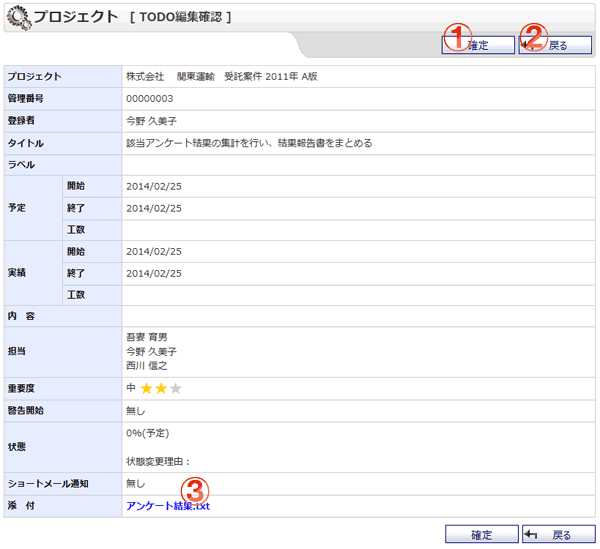

TODO編集の確認を行う画面です。

機能説明
確定ボタンTODOを登録し、遷移元画面へ遷移します。 |
戻るボタン遷移元画面へ遷移します。 |
|---|---|
添付ファイルリンク添付ファイルをダウンロードします。 |
表示・入力項目説明
プロジェクト
プロジェクトを表示します。
管理番号
管理番号を表示します。
登録者
登録者を表示します。
タイトル
タイトルを表示します。
ラベル
ラベルを表示します。
予定
予定を表示します。
実績
実績を表示します。
内容
内容を表示します。
担当
担当を表示します。マイプロジェクトのTODO編集の場合は表示されません。
重要度
重要度を入力します。
警告開始
警告開始を表示します。
状態
状態を表示します。
ショートメール通知
ショートメール通知を表示します。マイプロジェクトのTODO編集の場合は表示されません。
添付
添付ファイルを表示します。